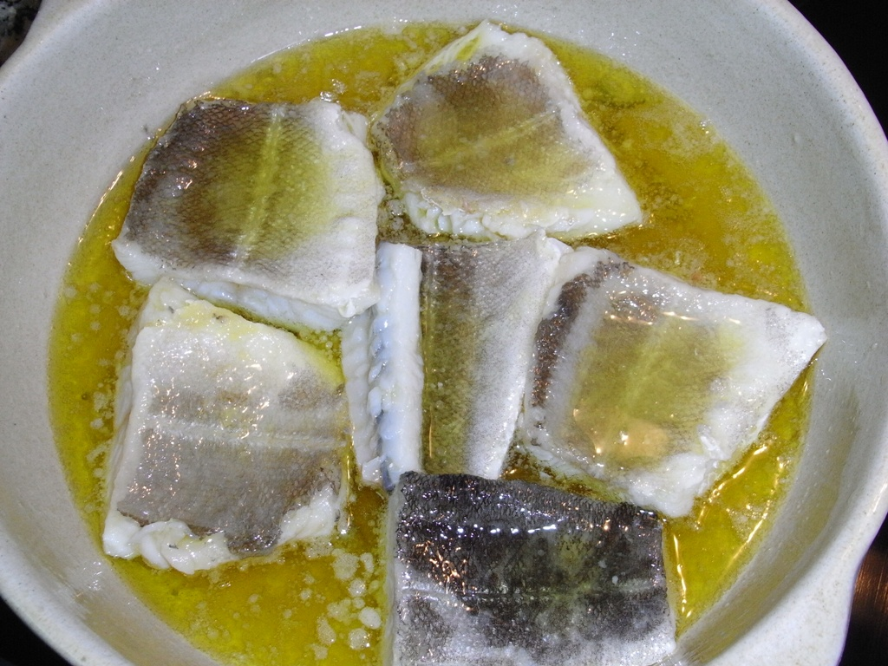

| pinchos
A pincho, pintxo or pinchu is a small snack, typically eaten in bars, traditional in northern Spain and especially popular in the Basque country, Navarre, La Rioja, Cantabria, and Asturias | |
Marmitako
Another typical fish dish of Bilbao cuisine is marmitako, a delicious stew made up of tuna, potatoes, peppers, and onions.
| |
|  |
Bacalao al pil pil Bacalao pil-pil is cod that has been fried with garlic, extra virgin olive oil from Spain, and chili until the oils have emulsified into a creamy sauce |
| Gateau Basque
Gateau Basque also known as Pastel vasco is one of the most classic Basque desserts and you can't visit Bilbao without trying a slice paired with a cup of café con leche. Pastel vasco | |
| txangurro Txangurro is a species of spider crab found in the Bay of Biscay, and a staple in Basque cuisine. It tends to have more succulent meat and a deeper flavour |